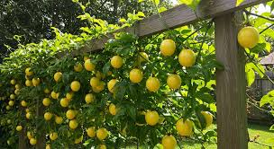
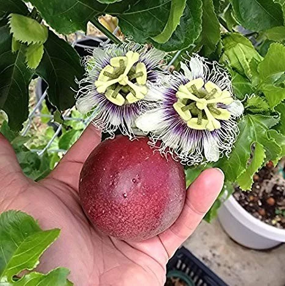
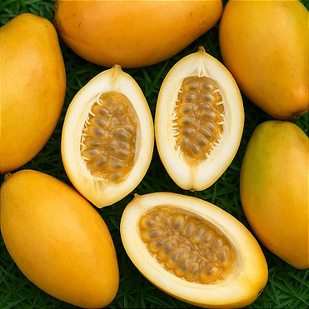
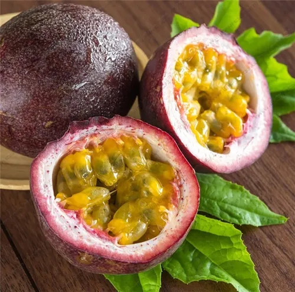
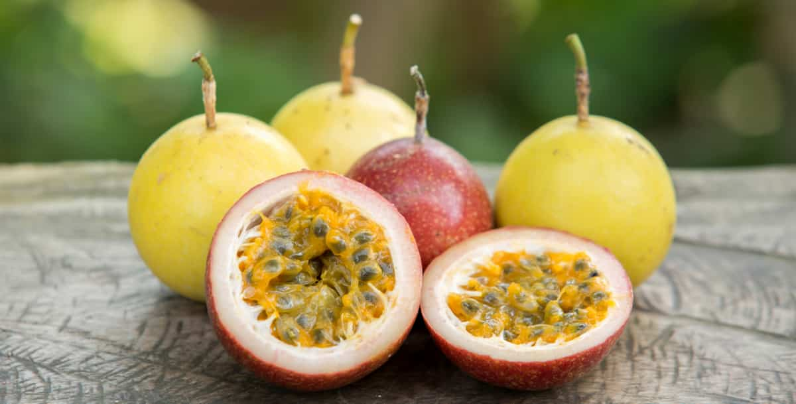
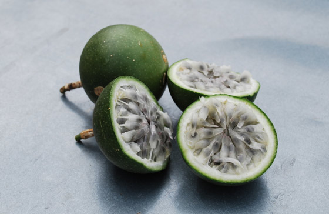
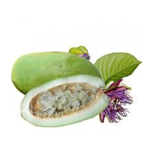
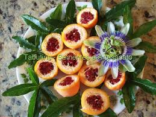
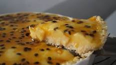

Maracujá
Origem:
O maracujá pertence ao gênero Passiflora, que muitas delas nativas das florestas tropicais da América do Sul, especialmente do Brasil. Os povos indígenas já cultivavam e consumiam o maracujá muito antes da chegada dos europeus, aproveitando sua polpa doce e suas propriedades relaxantes.Os nativos sul-americanos utilizavam a fruta como um alimento energético e também em preparações medicinais, para tratar ansiedade e insônia. Além disso, as sementes eram frequentemente usadas como vermífugo natural.
Plantio:
O plantio de maracujá deve ser feito em um solo rico em matéria orgânica e bem drenado, com pH entre 5,5 e 6,5. A escolha da variedade de maracujá também é importante para garantir uma colheita de qualidade. Segundo o engenheiro agrônomo João Carlos Fraga, “as variedades mais cultivadas no Brasil são o maracujá-amarelo, o maracujá-doce e o maracujá-azedo”. O espaçamento entre as mudas deve ser de 2,5 x 5 m, com duas plantas por cova. Após o plantio, é necessário realizar a irrigação adequada para garantir o desenvolvimento das mudas. Além disso, é importante realizar a poda das plantas para controlar o crescimento e estimular a produção.
Época:
A melhor época é quando a temperatura aumenta e as chuvas têm início. Regiões com clima tropical são as mais recomendadas para o cultivo de maracujá, pois apresentam temperatura em torno de 26°C. Já regiões com temperaturas abaixo de 15°C não são propícias ao maracujazeiro. A colheita do maracujá ocorre, entre 6 e 9 meses, após o plantio, quando os frutos começam a cair no chão. Geralmente, os maracujás são colhidos, de 2 a 3 vezes por semana, pois não devem ficar por longos períodos no chão. Caso contrário, os frutos murcham, o que compromete o seu padrão qualitativo para a comercialização, além de reduzir o seu valor comercial.
Floração:
As diversas espécies de maracujá apresentam flores distintas em termos de cor, tamanho e forma. O Maracujá roxo apresenta-se como a espécie de maior procura nos mercados europeus e com crescente produção em Portugal e Sul da Europa. As flores do Maracujazeiro são hermafroditas, evidenciando-se a presença simultânea de órgãos reprodutores masculinos (estames) e femininos (ovários) nas flores.
- Flor do maracujá roxo.
Espécies:
Maracujá-doce:A primeira das espécies que iremos destacar e que, sem dúvida é muito apreciada, é o maracujá-doce (Passiflora alata). Nativo da Amazônia, é uma espécie trepadeira, com aparência que lembra um mamão papaia. Tem sabor muito doce e sua polpa é geralmente consumida de colher. Sua polpa contém fósforo, potássio, cálcio, zinco e ferro, é rica em vitaminas A e C, além de ser uma excelAlém do consumo in natura, o maracujá-doce também é usado em preparos, principalmente sobremesas (mousses, tortas e bolos).

O maracujá-roxo (Passiflora edulis) é da mesma espécie do maracujá amarelo ou azedo (P. edulis f. flavicarpa), entretanto, possui características menos ácidas do que seu irmão. Ele é rico em vitamina C, tem propriedades antioxidantes e alta taxa de fibra em sua composição, bem como nutrientes essenciais: ferro, potássio, cálcio, entre outros. É cultivado em climas mais amenos, principalmente nos estados do Sul do Brasil, sendo popular também em alguns países europeus, como na Holanda e na Bélgica. Embora tenha a casca roxa, a sua polpa tem colocação amarelada, porém é menos ácida.

Conforme o próprio nome já diz, é muito parecido com uma maçã. Entre as características dessa fruta, é menos ácida do que espécies mais tradicionais, é rica em fibras que ajudam na digestão, além de ter um sabor adocicado. Também possui as principais vitaminas do complexo A, B e C. Uma curiosidade: por ter uma casca bem dura, o maracujá-maçã recebe também o nome de “maracujá-de-osso”. Outro detalhe interessante é que, devido às suas propriedades torna-se um ótimo calmante natural. O maracujá-maçã é rico em fibras e uma de suas características é ter uma casca bem dura.

Nativo do semiárido nordestino, o maracujá-da-caatinga (Passiflora cincinnata) também recebe o nome de maracujá-do-mato. É uma fruta que está no meio termo entre a doçura e a acidez. É utilizado sobretudo em geleias, sucos e até mesmo sorvetes. Notadamente aromático, esse tipo de maracujá possui casca esverdeada, polpa branca, propriedades calmantes e vitaminas A, B e C. Ademais, apresenta uma uma flor muito bela e delicada. O maracujá-da-caatinga possui casca verde e uma polpa na cor branca, tendo um sabor entre o doce e o azedo. Em virtude de sua região de origem, o maracujá-da-caatinga é bem resistente à seca e às pragas que normalmente atacam as demais espécies dessa fruta.

Outra espécie brasileira, o maracujá-açu (Passiflora quadrangularis) é bastante difundido na região norte do país. Seus frutos são os maiores do gênero, podendo chegar a incríveis três quilos! O maracujá amarelo, em comparação, pesa em média 160 gramas. Essa espécie é também pode ser conhecida como “maracujá-melão” (pelo formato semelhante à essa fruta) ou “de quilo” (pelo seu tamanho). Possui as mesmas qualidades nutricionais que seus “primos” próximos, além de propriedades anti-inflamatórias, antioxidantes e digestivas. Seu sabor tende mais ao adocicado do que ao azedo. O fruto do maracujá açu pode chegar a pesar até três quilos, quase 20 vezes mais do que as variedades tradicionais.

De nome científico Passiflora caerulea, essa é uma das espécies oriundas das regiões de clima mais ameno da América do Sul e, por isso, é uma planta que tem maior resistência às baixas temperaturas. Em algumas regiões, a exemplo do Rio Grande do Sul, principalmente na fronteira Oeste do Estado, é conhecido como “maracujá-do-mato”. Trepadeira, sua disposição pelas cercas e alambrados presenteia a todos com uma visão deslumbrante quando em floração. Aliás, é mais cultivado pelas suas flores do que pelos seus frutos. Um pouco menor que a fruta tradicional, esse tipo de maracujá tem casca laranja e polpa vermelha, com sementes que lembram o melão de São Caetano. Embora seja de clima ameno, é uma planta que precisa de sol pleno.

Comoposiçaõ nutricional:
| Tabela Nutricional | Nutrientes em 100g | %VD(*) |
|---|---|---|
| Valor energético (Kcal) | 68.0 | 3.4 |
| Carboidratos(g) | 12.8 | 4.27 |
| Açúcares(g) | 11.7 | - |
| Proteínas(g) | 2.0 | 0.7 |
| Gorduras totais(g) | 2.1 | 3.8 |
| Gorduras saturadas(g) | 0.2 | 0.9 |
| Fibra alimentar(g) | 1.1 | 4.4 |
| Sódio(mg) | 1.58 | 1.17 |
- %VD(*)= Valor diário com base em uma dieta de 2.000 kcal
ou 8400 kj. Seus valores diários podem ser maiores ou
menores dependendo de suas necessidaes energéticas.
Benefícios:
- Diminuir ansiedade e estresse;
- Controlar e prevenir a diabetes;
- Combater a insônia;
- Ajudar na perda de peso;
- Prevenir doenças cardiovasculares;
- Controlar a pressão arterial;
- Combater a prisão de ventre;
- Prevenir flacidez e envelhecimento precoce;
- Aumentar a energia;
- Prevenir o desenvolvimento do câncer.
Receitas com maracujá:
Mousse:

Ingredientes:
- 1 lata de leite condensado;
- 1 lata de suco de maracujá (medida pela lata de leite condensado);
- 1 lata de creme de leite sem soro.
Utensílios:
- Liquidificador;
- Medidor;
- Colher;
- travessa.
Modo de Preparo:
- Em um liquidificador, bata o creme de leite, o leite condensado e o suco concentrado de maracujá.
- Em uma tigela, despeje a mistura e leve à geladeira por, no mínimo, 4 horas.
Trufa:

Ingredientes:
- 1 lata Creme de Leite;
- 100g de manteiga;
- Meia xícara (chá) de suco de maracujá concentrado;
- 500g de chocolate branco picado;
- 300g de chocolate meio amargo;
- Meia xícara (chá) de chocolate em pó.
Utensílios:
- Geladeira.
- Panela
- Colher de pau
- Tigela
- Forminhas de papel
Modo de Preparo
- Em uma panela em banho maria, misture o creme de leite e a manteiga.
- Acrescente o suco de maracujá e o chocolate branco, misturando bem até obter uma mistura homogênea.
- Retire da panela, transfira para um recipiente e leve à geladeira por cerca de 12 horas.
- Faça bolinhas e banhe-as no chocolate meio amargo já temperado adequadamente.
- Passe-as no chocolate em pó e coloque-as em forminhas de papel, conservando-as em local fresco.
Torta:

Ingredientes para a massa:
- 12 colheres (sopa) de farinha
- 2 a 3 colheres (sopa) de açucar
- 1 colher (cha) de fermento em pó
- 5 colheres (sopa) de margarina
- 2 colheres de creme de leite
Ingredientes para o recheio:
- 1 lata de leite condensado
- 1 lata de creme de leite
- 200 ml de suco concentrado de maracuja sem as sementes (3 a 4 maracujas)
Ingredientes para a cobertura:
- Polpa de um maracujá com as sementes
- 1 colher (sopa) de amido de milho
- 3 colheres de açúcar
Utensílios:
- Liquidificador
- Panela
- Colher de silicone
- Forma com fundo removível
- Forno elétrico
- Tigela
Modo de preparo:
Massa:
- Misture tudo e amasse bem até ficar uma massa homogênea.
- Abra a massa e coloque em uma forma redonda de fundo removível.
- Leve ao forno até ficar dourada.
Recheio:
- Bata tudo no liquidificador por alguns minutos e despeje sobre a massa ja assada
Cobertura:
- Coloque os ingredientes em uma panela, misture bem e leve ao fogo mexendo até as sementes se separarem, espalhe por cima do recheio e leve a geladeira.
Bibliografia:
- Origem: https://plantareareceita.com.br/conheca-a-historia-do-cultivo-do-maracuja/
- Plantio: https://agriconline.com.br/portal/artigo/como-produzir-maracuja-guia-completo-para-plantio-e-colheita/
- Época: https://www.afe.com.br/artigos/orientacoes-de-especialistas-sobre-plantio-de-maracuja
- Floração: https://www.espaco-visual.pt/floracao-maracujazeiro/
- Espécie: https://blog.mfrural.com.br/tipos-de-maracuja/#:~:text=Outra%20esp%C3%A9cie%20brasileira%2C%20o%20maracuj%C3%A1,os%20mais%20comuns%20no%20Brasil.
- Composição Nutricionais: https://vitat.com.br/alimentacao/busca-de-alimentos/alimentos/532-maracuja/
- Benefícios: https://www.tuasaude.com/maracuja/
- Mousse: https://www.tudogostoso.com.br/receita/1599-mousse-de-maracuja.html
- Trufa: https://www.receitasnestle.com.br/receitas/trufa-de-maracuja
- Torta: https://www.tudogostoso.com.br/receita/1024-torta-de-maracuja.html